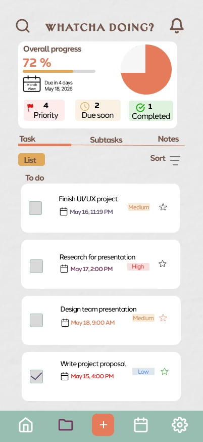
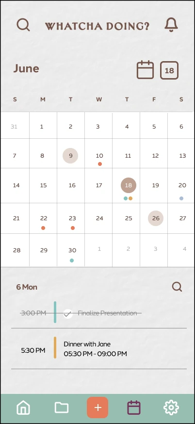
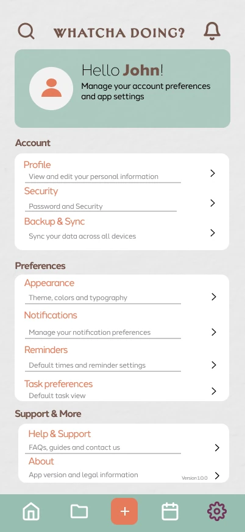
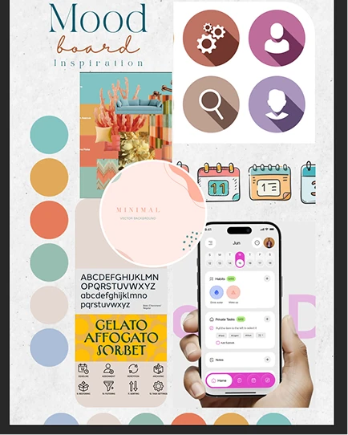

Overview
Whatcha Doing is a task management app design project focused on helping people organise their responsibilities and understand what to do next.
The problem
When tasks are scattered across notes, messages, and reminders, it can be difficult to keep track of what needs attention. A task management experience needs to make adding and reviewing tasks straightforward without creating more work for the user.
Design question: How might we help people organise everyday tasks through a clear and approachable mobile experience?
The goal
Create an app concept that supports a simple task management journey: capturing a task, reviewing responsibilities, and keeping track of progress.

Design approach
The project explored how users move through task-related actions and how the interface can make those actions understandable. User flows and prototype work helped connect individual screens into a coherent experience.
The design direction focused on clear hierarchy, consistent navigation, and visible actions.
Key design considerations
Make the next action clear.
Users should be able to recognise where to begin and how to move forward.
Keep task information readable.
Layouts should help users distinguish individual tasks and understand relevant details.
Maintain consistency across screens.
Repeated interface patterns can make the experience easier to learn and navigate.
Provide useful feedback.
Task-related actions should communicate their result so users understand what has changed.

Outcome and next steps
The project included task-focused design work and prototypes illustrating the proposed experience.
The next step would be to test the core journey with users: adding a task, finding it again, and updating its progress. This would help identify unclear labels, unnecessary steps, and opportunities to improve feedback.
Reflection
Whatcha Doing helped me explore how small interface decisions affect everyday usability. The project encouraged me to think carefully about the relationship between clear information, simple actions, and a consistent user journey.
DESIGN GALLERY
A closer look.
Select any image to open it at full size. Screens show concept content.

